Circuits for the combinational levels of nandgame.com using as few NAND gates as possible, found with a SAT solver. Each level is shown built from the components unlocked by earlier levels, and as plain NAND gates.
13 of 17 levels are proven minimal. All 10 levels with a game target meet it. Levels that are 16-bit in the game are solved here at 1 or 2 bits.
Generated by nandgamesolver.
| Level | Group | NANDs | Status | Game target |
|---|---|---|---|---|
| Invert | Logic Gates | 1 | Proven minimum | 1 matches |
| And | Logic Gates | 2 | Proven minimum | 2 matches |
| Or | Logic Gates | 3 | Proven minimum | 3 matches |
| Xor | Logic Gates | 4 | Proven minimum | 4 matches |
| Half Adder | Arithmetics | 5 | Proven minimum | 5 matches |
| Full Adder | Arithmetics | 9 | Proven minimum | 9 matches |
| Multi-bit Adder | Arithmetics | 18 | Best found · ≥ 12 | 18 matches |
| Increment (2-bit) | Arithmetics | 5 | Proven minimum | — |
| Subtraction (2-bit) | Arithmetics | 15 | Best found · ≥ 12 | — |
| Equal to Zero | Arithmetics | 10 | Proven minimum | 10 matches |
| Less than Zero (2-bit) | Arithmetics | 0 | Proven minimum | — |
| Selector | Switching | 4 | Proven minimum | 4 matches |
| Switch | Switching | 4 | Proven minimum | 4 matches |
| Logic Unit (1-bit) | Arithmetic Logic Unit | 13 | Best found · ≥ 11 | — |
| Arithmetic Unit (1-bit) | Arithmetic Logic Unit | 7 | Proven minimum | — |
| ALU (1-bit) | Arithmetic Logic Unit | 52 | Best found · ≥ 11 | — |
| Condition (2-bit) | Arithmetic Logic Unit | 8 | Proven minimum | — |
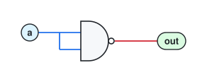
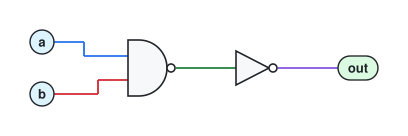
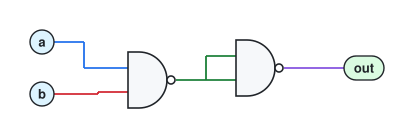
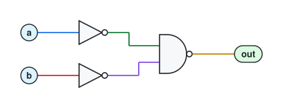
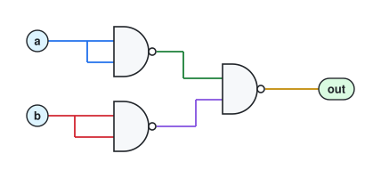
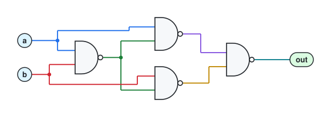
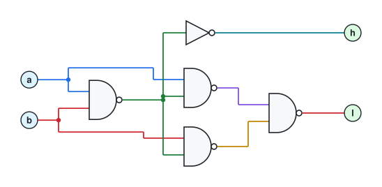
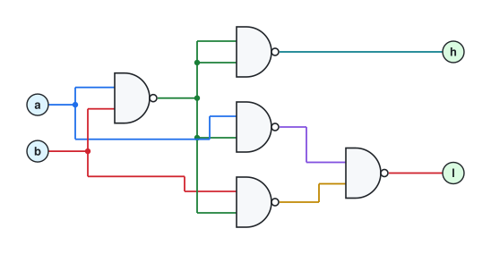
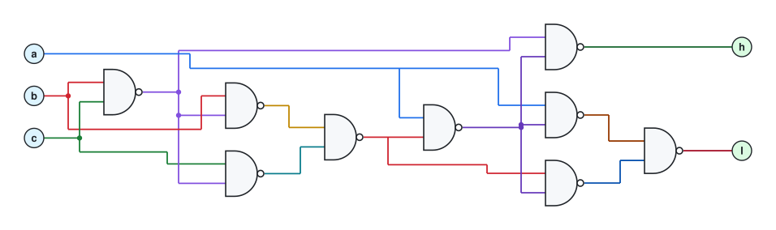
output carry is named 'cout' here (the game calls both carries 'c')
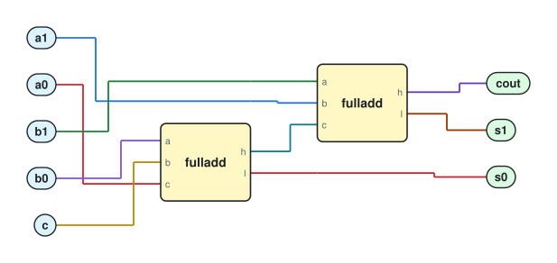
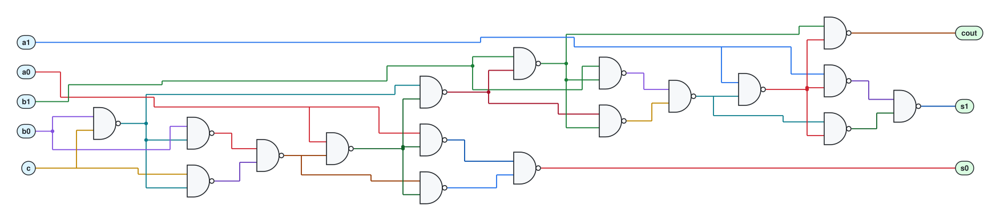
16-bit in the game
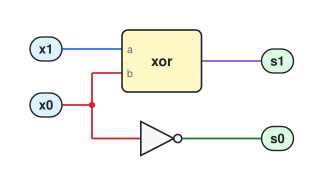
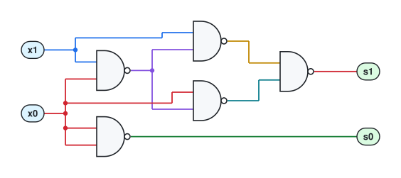
16-bit in the game
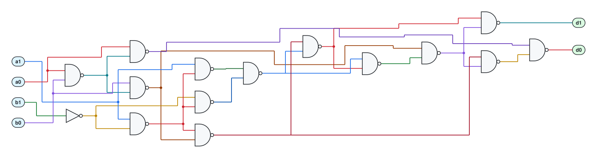
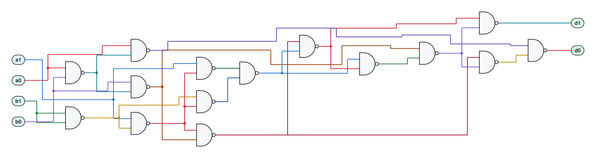
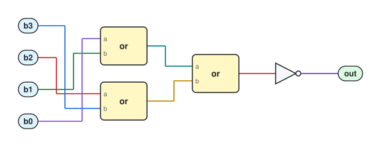
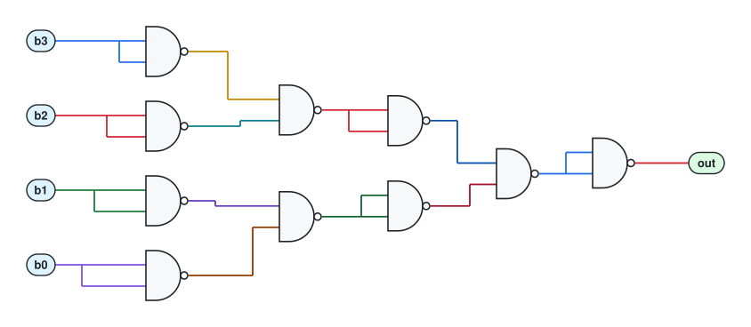
16-bit in the game; the answer is just the sign bit
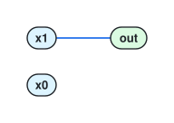
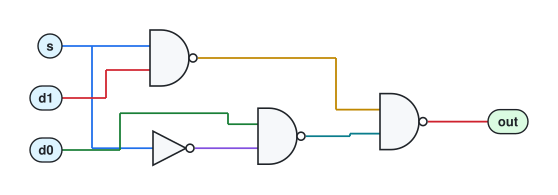
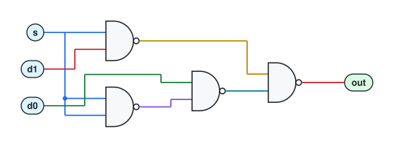
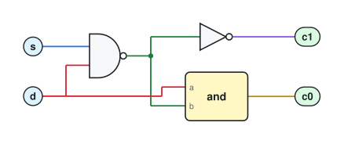
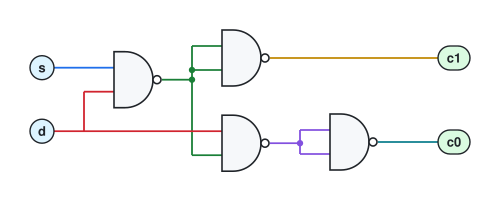
16-bit in the game
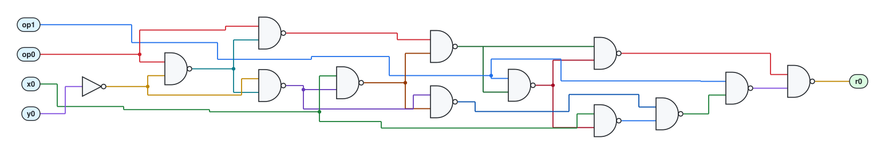
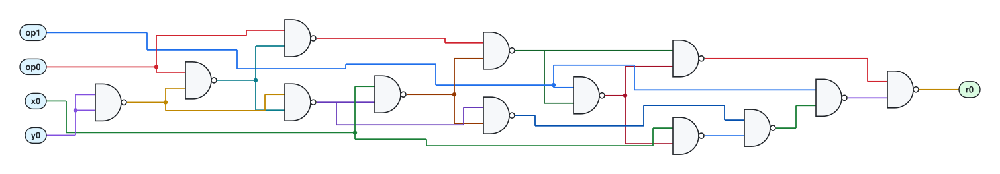
16-bit in the game
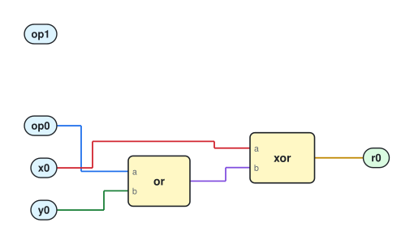
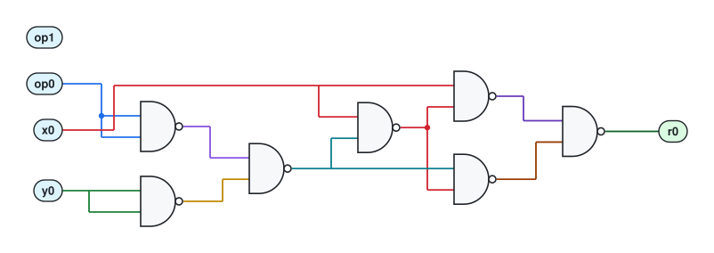
16-bit in the game
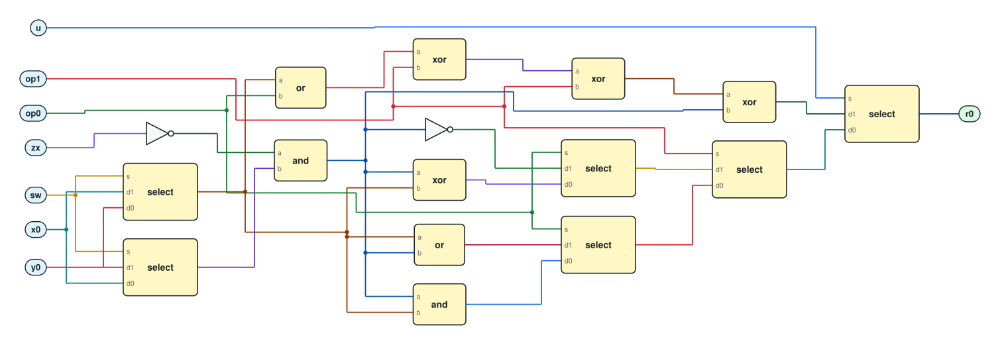
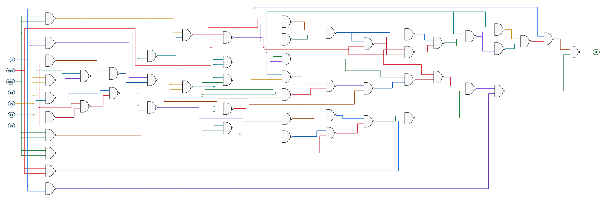
16-bit in the game
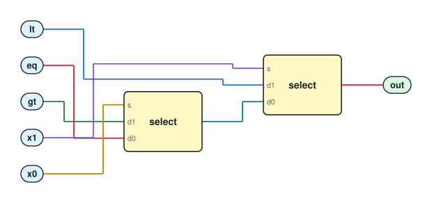
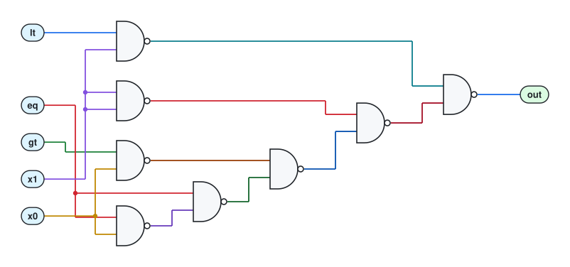